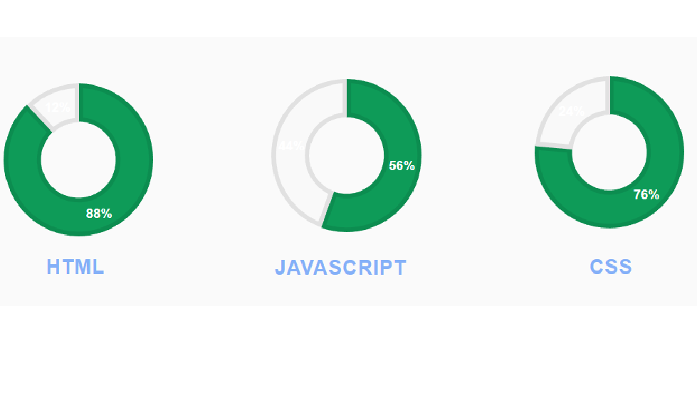

Informatico y Desarrollador de software
Especialista en desarrollo web. Consultor informatico
Analista funcional
EXPERIENCIA LABORAL
De mayo de 2012 a la actualidad.
Desarrollador de software de Microstrategy en "Tecnologias Avalon", de Madrid.
Mantenimiento de informes sobre la aplicacion, con un rendimiento optimo en la materia.
Gestion de proyecto de administracion Microstrategy.
Supervision y evaluacion del rendimiento del equipo junior.
Asesoria sobre los requisitos de administracion y personalizacion de produccion.
De junio de 2009 a mayo de 2012.
Desarrollador de software de Microstrategy en Tecnologicamente Tuyos, de Madrid.
Diseno y participacion en ejercicios de pruebas de carga.
Diseno de los programas de formacion de los empleados internos y del personal subalterno.
Estimacion de las mejores practicas para la implementacion de Microstrategy.
Informes de estado y situacion, incluyendo los posibles problemas y los riesgos de evaluacion.
HABILIDADES

FORMACIÓN ACADEMICA
2010-2015
Titulo de Grado en ingenieria informatica.
2005-2010
Titulo de Grado en ingenieria informatica de servicios y aplicaciones.
1995-2005
Curso de Business Intelligence para Microstrategy.